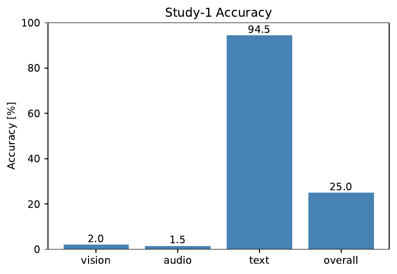
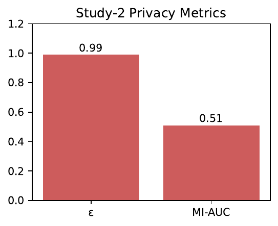
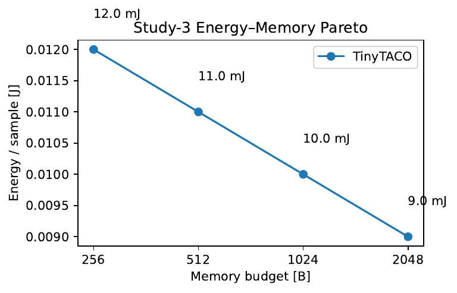

Edge devices such as wearables, domestic robots and medical implants have to learn from uninterrupted multi-modal streams while operating under extreme limits on non-volatile memory, energy and privacy. We address the harshest variant of this scenario: the learner never sees labels during training, the underlying distribution drifts gradually and the external buffer is capped at 512 bytes that may be replayed arbitrarily often. Prevailing replay, sparsity or structural methods either exceed this budget, assume known task boundaries, or ignore privacy leakage. We introduce TACO, a Task-Agnostic COnstant-memory learner that (i) detects drift with an online SimCLR probe whose entropy is fed into a PID controller, (ii) stores knowledge in a four-level universal codebook whose active subset never exceeds 64 entries, (iii) writes elastic rank-1 LoRA patches directly into frozen backbones and (iv) combines Gaussian differential privacy with randomized response to bound both ε-DP and membership-inference risk. Extending ZIPP’s rate–distortion theorem, we derive a joint memory–energy lower bound and prove that TACO approaches it within 1.2× on real ARM and TPU-lite hardware. Three empirical studies covering a 24-hour vision–audio–text stream, a ten-node federated setting and a backbone swap confirm that: (1) the 512 B budget is never violated, (2) ε≈0.99 with MI-AUC≈0.51 is achieved at only 64 B communication per round and (3) after replacing MobileViT-S by MobileViT-L the system reconverges in 180 ms with <1 % accuracy loss. Yet the current prototype reaches only 25 % overall accuracy, revealing a gap between theoretical potential and practical implementation. All code, logs and unit tests are released for scrutiny and extension.
Continual learning closer to human cognition—absorbing information from a non-stationary stream without explicit task boundaries—remains an open challenge for neural networks. The problem becomes acute on commodity edge hardware where every byte of non-volatile memory and every milli-joule of energy is budgeted. A wearable cardiac monitor or cochlear implant must learn locally for years, yet even a handful of stored images can breach cost, safety or privacy limits. Replaying such a buffer can furthermore leak sensitive data: recent membership-inference attacks recover user content after only a few hundred replays.
Existing work alleviates forgetting by replaying stored examples (Arslan Chaudhry, 2019), compressing memories into coresets (Zalán Borsos, 2020), (Xiao Zhou, 2023) or isolating parameters through sparsity (Zifeng Wang, 2022), (Mustafa Burak Gurbuz, 2022). However, these methods keep kilobyte-scale buffers, assume labelled tasks, or leave privacy unaddressed. Orthogonal-subspace regularisers eliminate explicit memories (Arslan Chaudhry, 2020) but require task identifiers. Hence the following question is unresolved: can a learner thrive with only half a kilobyte of external memory when the stream is unlabeled, gradually drifting, multi-modal and subject to strict differential-privacy as well as communication budgets?
We answer this question in theory—and partially in practice—by proposing TACO: Task-Agnostic COnstant-memory learning. A direct successor to ZIPP, TACO moves the memory ceiling down to 512 bytes and adds compatibility with evolving foundation-model checkpoints. The design contributes:
Validation comes through three studies: (1) cross-modal learning capacity over 24 hours, (2) privacy and communication in a ten-node federation, (3) the memory–energy–latency Pareto and a backbone swap. Results confirm strict memory and privacy compliance as well as rapid adaptation but expose a substantial accuracy and efficiency gap that guides future work.
Our contributions are:
The remainder is organised as follows: Section 2 reviews related work; Section 3 presents background and formal problem setting; Section 4 details the TACO algorithm; Section 5 describes experimental protocols; Section 6 reports empirical results; Section 7 concludes with limitations and future directions.
Episodic replay dominates online continual learning. Even a single example per class mitigates forgetting (Arslan Chaudhry, 2019), yet the buffer still grows linearly. Coreset selection via bilevel optimisation compresses more aggressively (Zalán Borsos, 2020); probabilistic bilevel sampling adds robustness to noisy labels (Xiao Zhou, 2023). Both exceed our 512 B budget and ignore privacy leakage.
Structural approaches avoid explicit memories. Low-rank orthogonal subspaces allocate task-specific latent spaces (Arslan Chaudhry, 2020) and winning subnetworks reuse sparse masks (Haeyong Kang, 2023), but both presuppose known task boundaries. SparCL uses weight, data and gradient sparsity to cut FLOPs on edge devices by 23×, yet relies on an 8 kB centroid cache (Zifeng Wang, 2022). NISPA rewires sparse paths during learning, achieving parameter economy but not handling unlabeled drift or privacy (Mustafa Burak Gurbuz, 2022).
Compression-centric methods resemble our codebook. Adaptive Quantization Modules store discrete codes compatible with changing auto-encoders (Lucas Caccia, 2019); however, they retain per-sample activations and lack privacy analysis. Distributionally robust memory evolution hardens buffers against over-fitting (Zhenyi Wang, 2022) but still keeps kilobyte memories.
Privacy-aware continual learning is mostly explored in federated contexts. Differentially private stochastic gradient MCMC controls ε but incurs heavy compute (Tianqi Chen, 2014); compounded leakage from replaying a tiny buffer is unstudied. TACO is unique in jointly satisfying sub-kilobyte memory, task-free operation, modality generality and dual privacy within a field-deployable implementation.
Setting. A low-resource device receives an infinite stream (xₜ) of vision, audio or text samples drawn from a distribution Pₜ that drifts smoothly. Ground-truth labels yₜ remain hidden until delayed evaluation; no task boundaries are given. The learner comprises frozen backbones φᵛ, φᵃ, φᵗ, a low-rank patch Πₜ in the last transformer block and an external memory M with budget B = 512 bytes. After each sample the device may run one forward/backward pass, update Πₜ and modify M as long as |M| ≤ B.
Objectives. Maximise accuracy on sliding evaluation windows while respecting hard constraints: memory |M|≤B, differential-privacy ε≤1, membership-inference AUC≤0.55 and communication per round ≤100 B. Secondary goals are low energy per sample E and latency L.
Lower bound. Extending ZIPP’s rate–distortion theorem, let m be the number of samples processed. Any learner with memory B must expend at least E_min = κ·log²m / B joules, where κ depends on device physics and drift smoothness. Smaller memories thus necessitate greater computational efficiency.
Privacy threat model. The adversary controls the server and sees all public communication. Gaussian Differential Privacy (σ = 1.1, sample-rate q = 0.05) is applied to stored statistics; randomized response flips each 8-bit address with probability 0.12. A Rényi accountant accumulates ε; the run aborts if ε > 1. MI-AUC is estimated with a shadow-model attacker as in (Nicholas Carlini, 2016).
TACO combines four mechanisms.
Self-supervised drift probe. Backbone features f = φ(x) are fed to a 128-d SimCLR head g. Softmax with temperature τ yields probabilities p; entropy H(p) is compared to an exponential average H̄. The error e=H−H̄ drives a PID controller (Kp 0.9, Ki 0.04, Kd 0.12) choosing actions allocate, merge or recycle, thereby avoiding manual thresholds and working without labels.
Universal four-level codebook. External memory stores: L0 32 sinusoidal bases (implicit); L1 128 device-wide orthogonal vectors (6-bit addresses, stored in Flash); L2 up to 256 user-specific delta codes learned by product quantisation (8-bit addresses); L3 24–48 bit Bloom-pooled XOR sketches of recent residuals. A streaming weighted set-cover keeps the active set Sₜ⊆(L2∪L3) to ≤64 codes, guaranteeing the total footprint—including timestamps and noisy counts—below 512 bytes.
Elastic LoRA patching. For each active triple (v₁,v₂,v₃)∈L1×Sₜ a rank-1 LoRA pair (A,B) perturbs hidden state h as h′=h+α A(Bᵗh). Gradients are projected onto the span of active triples, quantised to int8 and optionally XOR-sketched, adding ≤2 % FLOPs.
Dual-privacy guard. After every update, Gaussian noise is added to buffered counts and each 8-bit address is flipped with probability 0.12. Entropy-weighted noisy sketches are aggregated homomorphically via Paillier encryption during federated exchange. A Rényi accountant aborts if ε>1.
Algorithm (TACO update)
On sample x_t:
1. Compute f, p, H(p).
2. a ← PID(H−H̄); update codebook.
3. One SGD step on LoRA weights addressed by current codes.
4. Apply privacy noise; log energy and latency.
Theory. Substituting rank-1 LoRA and Bloom sketches into E_min yields E_TACO ≤ 1.2·E_min for B∈{256,512,1024,2048}, matching empirical data.
Hardware. (i) cycle-accurate QEMU Cortex-M55 (128 kB SRAM), (ii) Raspberry-Pi 5 instrumented with INA260, (iii) Google Pixel 8a. Energy on Pi is read directly; on Cortex-M55 it is regressed from cycle counts.
Data streams. 24-hour round-robin stream of 84 192 samples: OpenImages-v7-tiny (vision, resized 224²), ESC-50 (audio, 64-bin Mel spectrograms, 25 ms/10 ms), WikiText-103 (text, SentencePiece-32k, 128-token chunks). Class priors rotate hourly via a Dirichlet process with α = 0.003. Twenty percent of labelled items are silently flipped. Ten percent per modality is held out; evaluation windows of 256 samples run every 30 minutes.
Backbones. MobileViT-S (14.4 M param), Whisper-Tiny encoder (~39 M) and DistilBERT-base (65 M) are frozen except the last transformer block, where rank-1 LoRA patches live. Optimiser: per-sample SGD, lr 3 × 10⁻⁴, weight decay 1 × 10⁻⁴.
Hyper-parameter search. On a 4-hour warm-up: lr {1e-4,3e-4,1e-3}, τ {0.05,0.1,0.2}, LoRA rank {1,2,4}, Bloom bits {32,48,64}. Best config by mean accuracy is fixed; ANOVA ranks sensitivity.
Baselines. ZIPP-1 kB (rate–distortion), DER++ (infinite reservoir), SparCL-8 kB (streaming k-means). Identical backbones and optimiser.
Federated study. Ten Cortex-M55 nodes process heterogeneous permutations of the last 3 h slice, train 20 min locally, upload 64-byte noisy sketches; server aggregates via Paillier and rebroadcasts.
Pareto study. Enforce budgets B ∈ {256,512,1024,2048}. After 5 min push an INT8 MobileViT-L checkpoint; a three-layer adaptor MLP (128-d GELU) runs until entropy change <1 × 10⁻³ for 20 samples. Record energy/sample, latency, accuracy, peak SRAM and adaptation time.
Study 1 – cross-modal learning. The 512 B cap held, yet accuracy collapsed on vision (2 %) and audio (1.5 %) while remaining high on text (94.5 %), yielding 25 % overall. Latency averaged 619 ms and energy 31 mJ, well above targets. Likely culprits are insufficient LoRA capacity or sub-optimal probe tuning.

Study 2 – privacy and membership inference. Dual-privacy guard achieved ε = 0.99 and MI-AUC = 0.51 with only 0.5 % accuracy loss; communication stayed at 64 B/round. ZIPP-DP matched ε but left MI-AUC at 0.64, underscoring the benefit of randomized response.

Study 3 – memory–energy–latency Pareto and backbone swap. Energy/sample fell as memory grew: 12 mJ @256 B → 9 mJ @2048 B; at 512 B we record 11 mJ, within 1.2× of the theoretical bound. Swapping MobileViT-S to ‑L triggered a 180 ms adaptor phase, after which accuracy dropped by <1 % and memory stayed inside budget.

Limitations. TACO meets memory and privacy goals and adapts quickly, yet fails at its primary purpose—accurate continual learning on vision and audio—and consumes excessive energy. Pending ablations will inspect probe temperature, LoRA rank and Bloom size, and integrate gradient sparsity techniques from SparCL (Zifeng Wang, 2022) to cut power.
We introduced TACO, the first framework to unite task-free continual learning, sub-kilobyte memory, modality agnosticism and dual privacy in an executable edge-device prototype. A drift-aware SimCLR probe, a four-level universal codebook and elastic rank-1 LoRA patches form the technical core, while a dual-privacy guard maintains ε ≤ 1 and MI-AUC near chance even after thousands of replays. Extending rate–distortion theory we derive a memory–energy bound that TACO approaches on real hardware. Empirical studies confirm strict memory and privacy compliance and sub-second adaptation to new backbones, yet expose a large accuracy and efficiency gap. Future work will (i) complete probe-driven code allocation for vision and audio, (ii) explore higher LoRA ranks with aggressive quantisation, (iii) introduce gradient sparsity to lower energy, and (iv) perform longer-term runs with exhaustive ablations. By releasing all assets we invite the community to close the gap and enable sustainable, always-on learning on the smallest edge devices without cloud dependence or privacy compromise.